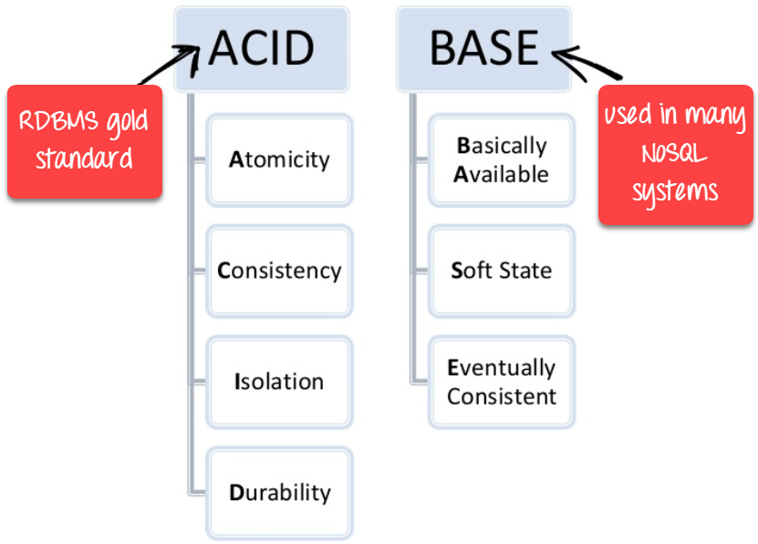
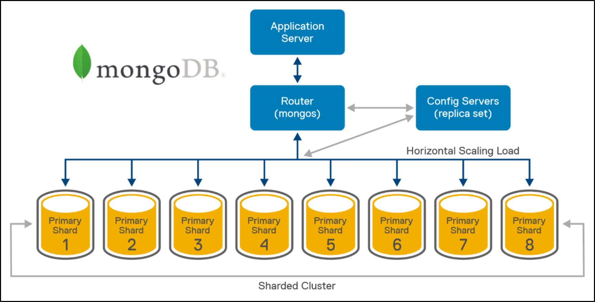
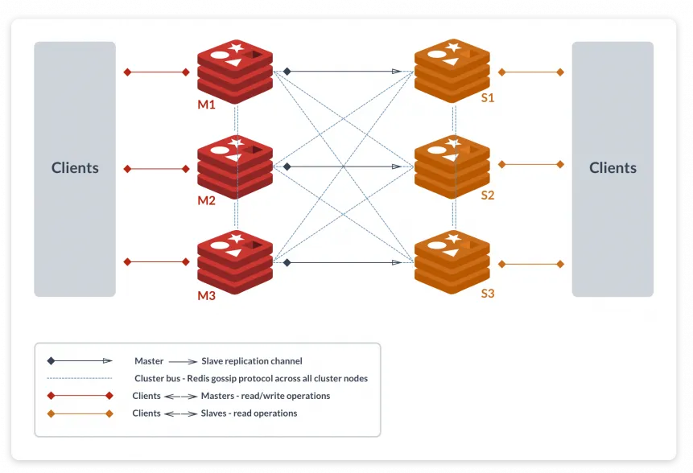
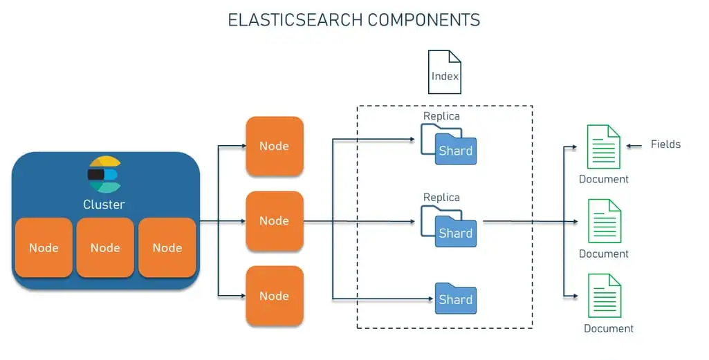
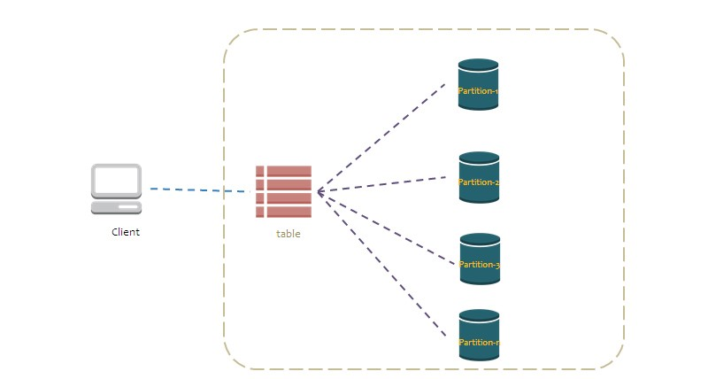
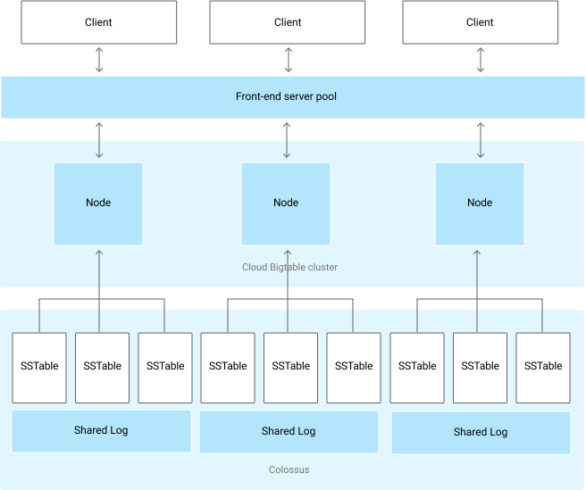

Bases de datos no relacionales (NoSQL)
Bases de datos no relacionales, características y actualidad
Noviembre 24, 2024 publicado por Ana María Zapata
Ante la creciente producción de grandes vólumenes de datos (Big Data) no estructurados ( por ejemplo: publicaciones en redes sociales, chats, imágenes satelitales, datos de sensores de IoT, correos electrónicos y presentaciones) y semi-estructurados (por ejemplo: metadatos de clasificación en archivos de imagen, archivos delimitados) y el auge de la inteligencia artificial se han requerido nuevas aproximaciones de solución para la gestión y análisis de información.
En esta tercera entrada de la serie de bases de datos, vamos a introducirnos en el complejo mundo de las bases de datos no relacionales (NoSQL) y sus características, así como su actualidad, esto con el fin de responder a dos preguntas académicas clave:
¿Qué es una base de datos no relacional?
¿Cuáles son las bases de datos no relacionales que se manejan en la actualidad?
Iniciaremos con la definición técnica de los motores de bases de datos no relacionales, para luego profundizar en sus características y finalmente, describir los licenciados y de uso libre más utilizados.
Definición
Las bases de datos NoSQL (Not Only SQL) son sistemas de gestión de datos diseñados para manejar grandes volúmenes de datos estructurados, semi-estructurados y no estructurados, de forma escalable y eficiente. A diferencia de las bases de datos relacionales (RDBMS), no se basan en esquemas rígidos y relaciones predefinidas, sino que emplean diversos modelos de datos como documentos, clave-valor, grafos o columnas anchas, según las necesidades de la aplicación (esta definición responde directamente a la pregunta "¿Qué es una base de datos no relacional?").
Características
Una muy importante característica de las bases de datos NoSQL es también una gran diferencia en comparación con las bases de datos relacionales; esta consiste en que las bases de datos NoSQL generalmente no cumplen con las propiedades ACID porque están diseñadas para priorizar escalabilidad y disponibilidad, características críticas en aplicaciones distribuidas y de alta demanda. En lugar de ACID, muchas bases de datos NoSQL adoptan el modelo BASE, que se centra en principios diferentes para gestionar la consistencia en entornos distribuidos.
Diferencias entre ACID y BASE
Existen marcadas diferencias entre los principios ACID y BASE, que se pueden resumir de la siguiente manera:
ACID (Atomicity, Consistency, Isolation, Durability)
Atomicidad: Las transacciones son indivisibles; se completan completamente o no se realizan en absoluto.
Consistencia: Las transacciones siempre llevan la base de datos de un estado válido a otro.
Aislamiento: Las transacciones concurrentes no interfieren entre sí.
Durabilidad: Los cambios realizados por una transacción confirmada son permanentes, incluso frente a fallos.
Las bases de datos relacionales (SQL) adoptan este modelo para garantizar la confiabilidad y precisión de los datos, pero esto puede limitar la escalabilidad en entornos distribuidos.
BASE (Basically Available, Soft state, Eventually consistent)
Disponibilidad Básica (Basically Available): El sistema garantiza la disponibilidad incluso en presencia de fallos parciales.
Estado Suave (Soft State): El estado del sistema puede cambiar con el tiempo, incluso sin nuevas entradas, debido a la replicación y sincronización.
Consistencia Eventual (Eventually Consistent): El sistema asegura que, con el tiempo, todos los nodos llegarán a un estado consistente, pero no necesariamente de inmediato.
El modelo BASE permite sacrificar la consistencia fuerte de los datos en favor de la escalabilidad y disponibilidad.
Razones por las que NoSQL opta por BASE
Las razones por las que NoSQL opta por el modelo BASE en lugar de ACID son:
Teorema CAP (Consistencia, Disponibilidad, Tolerancia a Particiones)
En sistemas distribuidos, es imposible garantizar simultáneamente consistencia, disponibilidad y tolerancia a particiones. Las bases de datos NoSQL priorizan disponibilidad y tolerancia a particiones, dejando la consistencia como eventual. Ejemplo: Un sistema puede continuar operando durante una partición de red, pero puede tardar un tiempo en sincronizar completamente los datos entre nodos.
Esquemas flexibles y datos distribuidos
NoSQL está diseñado para manejar datos no estructurados y distribuidos en múltiples nodos. Asegurar la consistencia fuerte (como en ACID) requeriría bloqueos o coordinación intensa entre nodos, lo cual impactaría la velocidad y escalabilidad.
Casos de uso específicos
Aplicaciones como redes sociales, IoT, y análisis de big data pueden tolerar inconsistencias temporales a cambio de alta disponibilidad y rendimiento.
La imagen a continuación presenta la comparación entre ACID y BASE:
Ejemplo Práctico
En una base NoSQL como Cassandra, cuando un nodo falla o está desconectado, los datos escritos pueden replicarse más tarde (consistencia eventual). Esto asegura disponibilidad continua, pero un cliente puede recibir respuestas ligeramente desactualizadas hasta que todos los nodos estén sincronizados.
Otras características importantes de las bases de datos NoSQL incluyen:
Flexibilidad en el esquema: Permiten manejar datos sin estructuras fijas, adaptándose a cambios rápidos en los requisitos.
Escalabilidad horizontal: Diseñadas para distribuir datos en múltiples servidores, añadiendo nodos para aumentar capacidad.
Baja latencia y alto rendimiento: Ideales para aplicaciones que requieren rápidas operaciones de lectura y escritura.
Distribución geográfica: Permiten replicar datos en diferentes ubicaciones para disponibilidad global.
Soporte para datos no estructurados: Capaces de manejar JSON, XML, blobs binarios, entre otros.
Tipología
Las bases de datos NoSQL se clasifican en cinco categorías principales:
Clave-valor: Datos almacenados como pares clave-valor (e.g., Redis, DynamoDB).
Documentos: Basados en formatos como JSON o BSON (e.g., MongoDB, CouchDB).
Grafos: Optimizados para analizar relaciones entre nodos (e.g., Neo4j).
Columnas anchas: Organizan datos por columnas en lugar de filas (e.g., Cassandra, HBase).
Almacenamiento en memoria: Para accesos ultrarrápidos al mantener datos en RAM (e.g., Redis, Memcached)
Motores NoSQL populares
Existen en la actualidad una variedad de productos propietario (licenciados) y de código abierto que se utilizan en la industria para la implementación de bases de datos NoSQL, a continuación se describen algunos bien conocidos en la industria (este apartado responde a la pregunta "¿Cuáles son las bases de datos no relacionales que se manejan en la actualidad?").
Motores Open Source
Entre los motores de código abierto más populares de diferentes tipologías tenemos:
MongoDB
Es un motor de bases de datos NoSQL orientado a documentos, ideal para aplicaciones web escalables. Basado en JSON (específicamente se encuentra especializado para el manejo del formato BSON que es una derivación binaria de JSON), ofrece flexibilidad en esquemas y consultas avanzadas.
Es una herramienta muy utilizada en el análisis en tiempo real y sistemas de contenido.
Arquitectura
La arquitectura de MongoDB está diseñada para alta disponibilidad, escalabilidad horizontal y flexibilidad en el modelado de datos. Presenta una configuración distribuida, con réplicas y particionamiento horizontal. Sus componentes Principales son:
Servidores de datos (mongod): Son los nodos donde los datos reales se almacenan, incluyen funcionalidades para lectura/escritura y gestión de datos, además; pueden configurarse como parte de un conjunto de réplicas (Replica Set) o clústeres fragmentados (Sharded Clusters).
Replica Sets: Grupos de nodos que proporcionan alta disponibilidad y redundancia de datos, contienen un nodo primario para las operaciones de escritura y Nodos secundarios que replican datos del primario y pueden manejar lecturas en ciertos casos. Opcionalmente, tienen un árbitro para romper empates en elecciones.
Sharded Clusters: Usados para distribuir datos en varios servidores (shards), permitiendo manejar grandes volúmenes de datos y altas tasas de consulta. Se componen de Shards (almacenan datos distribuidos), Config servers (Mantienen la metadata y configuración del clúster) y Mongos(que actúan como routers, dirigiendo las consultas hacia los shards apropiados).
Cliente (mongo): Es una herramienta de línea de comandos para interactuar con los servidores de MongoDB.
La siguiente ilustración presenta la arquitectura de MongoDB:
Redis
Es un motor en memoria de tipología clave-valor, enfocado en velocidad extrema y simplicidad. Es muy utilizado en aplicaciones empresariales para la gestión de sesiones y caché y en aplicaciones en tiempo real.
Arquitectura
Su arquitectura está diseñada para ser ligera y eficiente, y cuenta con varias características que la hacen ideal para aplicaciones de alto rendimiento, como caché, gestión de sesiones y mensajería en tiempo real. Los componentes clave de la arquitectura de Redis son:
Servidor Redis (Redis Server): Es el núcleo del sistema. Maneja todas las solicitudes de los clientes, realiza operaciones en la base de datos y almacena los datos en memoria. La persistencia opcional permite guardar los datos en disco para recuperación.
Cliente Redis (Redis Client): Los clientes envían comandos al servidor Redis. Existen bibliotecas de cliente para varios lenguajes de programación, lo que facilita la integración.
Replicación Maestro-Esclavo: Redis admite replicación asíncrona, donde un nodo primario replica datos a múltiples nodos secundarios (replicas). Esto mejora la disponibilidad y permite distribuir las cargas de lectura.
Redis Sentinel: Es un sistema de alta disponibilidad que monitorea los nodos Redis y ejecuta un failover automático en caso de fallos. Redis Sentinel garantiza que el sistema permanezca funcional incluso ante fallas en el nodo principal.
Redis Cluster: Permite la distribución horizontal de datos mediante sharding, dividiendo las claves en 16,384 slots de hash distribuidos entre múltiples nodos. Cada nodo puede ser primario o réplica.
La siguiente ilustración presenta la arquitectura de Redis:
Apache Cassandra
Es una solución NoSQL diseñada para manejar grandes volúmenes de datos con alta disponibilidad. Es muy utilizada en analítica de big data e internet de las cosas (IoT).
Arquitectura
La arquitectura de Apache Cassandra utiliza un modelo de nodos descentralizados sin un solo punto de fallo. Está diseñada para manejar grandes volúmenes de datos distribuidos de forma eficiente, garantizando alta disponibilidad y escalabilidad. A continuación, se detallan sus componentes:
Modelo Peer-to-Peer: Cassandra utiliza una arquitectura descentralizada donde todos los nodos en un clúster tienen el mismo rol. No hay un nodo maestro, lo que elimina un único punto de falla. Cada nodo puede recibir solicitudes de lectura y escritura, mejorando la tolerancia a fallos y la escalabilidad horizontal. Los nodos se comunican entre sí usando el protocolo Gossip, que intercambia información de estado en intervalos regulares.
Particionamiento de Datos y Consistencia: Los datos en Cassandra se distribuyen entre los nodos utilizando una función de hash basada en un anillo lógico. Cada dato tiene una clave de partición que se asigna a un rango específico del anillo. Cassandra admite diferentes niveles de consistencia, desde eventual consistency hasta strong consistency, configurables según las necesidades del sistema.
Replicación y Estrategias: Cassandra soporta estrategias de replicación configurables: SimpleStrategy (Replicación básica en un solo centro de datos) y NetworkTopologyStrategy (Diseñada para clústeres en múltiples centros de datos, asegurando replicación cruzada). La replicación proporciona redundancia para tolerancia a fallos. Por ejemplo, con un factor de replicación de 3, cada dato se almacena en tres nodos diferentes.
Componentes Clave: Commit Log (cada escritura se registra en este log para garantizar la durabilidad), SSTables o Sorted String Tables (estructuras de datos inmutables en disco que contienen los datos persistidos), MemTable (datos en memoria que se escriben posteriormente en SSTables), Bloom Filters (se utilizan para optimizar las búsquedas en SSTables) y Snitches (determinan la topología de la red y optimizan la replicación).
Operaciones de Lectura y Escritura Escritura (se registra en el commit log, se almacena temporalmente en la MemTable y finalmente se persiste en SSTables) y Lectura (los datos se obtienen de la MemTable o de las SSTables utilizando filtros Bloom para localizar rápidamente la información).
La siguiente ilustración presenta la arquitectura de Apache Cassandra:

Elastic Search
ElasticSearch es una base de datos NoSQL orientada a documentos que utiliza Apache Lucene como núcleo para ofrecer capacidades de búsqueda y análisis en tiempo real. Es frecuentemente utilizada en indexación y búsqueda en grandes volúmenes de datos.
Arquitectura
Presenta una condiguración de "clúster distribuido" con réplica de índices, su arquitectura distribuida permite manejar grandes volúmenes de datos y realizar búsquedas eficientes. Sus componentes clave son:
Cluster: Un cluster es un conjunto de nodos que trabajan en conjunto para almacenar datos y proporcionar capacidades de búsqueda y análisis, todos los nodos del cluster comparten un estado común y colaboran en operaciones distribuidas. ElasticSearch distribuye los datos mediante shards (fragmentos), que se replican para mejorar la tolerancia a fallos y la disponibilidad.
Nodos: Están claramente definidos según su propósito : Master Node (administra el estado del cluster, la asignación de shards y las operaciones de mantenimiento del cluster), Data Nodes (almacenan los datos y ejecutan operaciones relacionadas, como búsquedas y actualizaciones), Ingest Nodes (procesan documentos antes de ser indexados, aplicando transformaciones mediante pipelines), Coordinating Nodes (distribuyen las solicitudes del cliente a los nodos correspondientes y agregan los resultados) y Machine Learning Nodes -obsoletos- (previamente usados para análisis de datos avanzados, ahora reemplazados por plugins específicos).
Shards: ElasticSearch divide cada índice en shards primarios. Los shards secundarios (réplicas) aseguran la redundancia y mejoran la disponibilidad del sistema.
Comunicación: Los nodos utilizan el protocolo HTTP para interactuar con clientes externos y una capa de transporte interna para comunicarse entre sí. Esto garantiza una coordinación eficiente en un entorno distribuido.
Procesamiento de Consultas: las consultas se dividen y distribuyen a los shards relevantes. Los resultados se combinan para producir una respuesta agregada.
La siguiente ilustración presenta la arquitectura de ElasticSearch (la documentación desde donde se recuperó la imagen se encuentra en línea aquí ):
Motores Licenciados
Entre los motores propietarios o licenciados más populares de diferentes tipologías tenemos los siguientes dos:
DynamoDB (AWS)
Amazon DynamoDB es una base de datos NoSQL que combina modelos clave-valor y documento altamente escalable, diseñada para ofrecer baja latencia y alto rendimiento en operaciones de lectura y escritura. Es muy utilizado en aplicaciones web y comercio electrónico (ideal para aplicaciones con alta concurrencia).
Arquitectura
Es administrada por Amazon, cuenta con distribución automática de datos; sus componentes claves son los siguientes:
Modelo de Datos: Basado en un modelo de clave-valor o almacenamiento de tablas con índices secundarios globales (GSIs) y locales (LSIs) para acceso eficiente. Las claves principales consisten en una clave de partición (Partition Key) y opcionalmente una clave de ordenamiento (Sort Key), lo que facilita consultas específicas y organizadas.
Distribución y Particionamiento: DynamoDB utiliza particiones para distribuir datos automáticamente en múltiples nodos. El tamaño de las particiones se ajusta con base en el almacenamiento y la capacidad de lectura/escritura necesarias. Las particiones se gestionan dinámicamente y emplean un esquema de hash para distribuir la carga de manera uniforme.
Alta Disponibilidad: Los datos se replican automáticamente en múltiples zonas de disponibilidad (AZs) dentro de una región para garantizar tolerancia a fallos y disponibilidad continua. DynamoDB está diseñado para manejar fallos en el hardware subyacente sin afectar a los usuarios finales.
Ejecución y Escalabilidad: Utiliza SSDs como medio de almacenamiento para un acceso rápido y eficiente. La arquitectura de DynamoDB desacopla el rendimiento del tamaño de la tabla, eliminando la necesidad de que el conjunto de trabajo quepa en memoria.
Streams y Eventos: DynamoDB Streams permite la captura de cambios en tiempo real, soportando flujos de eventos y tareas como backups y análisis.
La siguiente ilustración presenta la arquitectura de Amazon DynamoDB:
BigTable (Google)
Google Bigtable es una base de datos NoSQL distribuida diseñada para manejar grandes volúmenes de datos, como terabytes o petabytes, con alta disponibilidad y bajas latencias. Utiliza un sistema de columnas anchas optimizado para grandes volúmenes y es muy utilizada para analítica de datos masivos (Procesamiento de grandes volúmenes de datos de IoT, series temporales, sistemas de recomendación o datos analíticos a escala masiva).
Bigtable está diseñado para casos donde la consistencia fuerte no es crítica, pero la disponibilidad y escalabilidad son esenciales.
Arquitectura
Presenta una configuración distribuida, diseñada para alta velocidad y latencia baja. Los componentes claves de la arquitectura de Google BigTable son los siguientes:
Tabla: Una tabla en Bigtable está compuesta por filas y columnas; cada fila está identificada de manera única por una clave de fila (row key). Las columnas están agrupadas en familias de columnas y no existen físicamente hasta que se almacenan datos en ellas, cada celda almacena valores versionados, organizados por marcas de tiempo en orden descendente.
Column Families: Almacenan columnas relacionadas. Se configuran al momento de crear o modificar la tabla. Las propiedades como retención de versiones y eliminación de datos antiguos se gestionan por familia de columnas.
Instancias, Clusters y Nodos: Se especifican como: Instancias (son representaciones virtuales que agrupan recursos y tablas), Clusters (unidades físicas zonales que consisten en nodos) y Nodos (manejan operaciones de lectura y escritura y procesan datos. Los datos almacenados en nodos están distribuidos como tablets).
Tablets: Fragmentos de datos de una tabla. Cada tablet contiene un rango específico de claves de fila, permitiendo particionar los datos para escalabilidad y paralelismo.
Separación de Almacenamiento y Computación: Bigtable separa el almacenamiento (en Google File System o Colossus) de los recursos computacionales, lo que permite escalar ambos de forma independiente.
La siguiente ilustración presenta la arquitectura de Google BigTable:
Ventajas
Algunas de las ventajas de utilizar un motor de base de datos NoSQL incluyen:
Escalabilidad: Ideal para crecimiento horizontal con carga masiva.
Flexibilidad: Manejan datos diversos sin rigidez en esquemas.
Alto rendimiento: Optimizadas para lecturas/escrituras rápidas.
Resiliencia: Replicación de datos en múltiples ubicaciones para tolerancia a fallos
Limitaciones
Aunque la implementación de un motor de base de datos NoSQL ofrece varias ventajas, también tiene algunas limitaciones entre las que se destacan:
Falta de estandarización: Cada motor tiene su propia sintaxis y funcionalidad.
Consistencia: Usualmente sacrifican consistencia fuerte en favor de disponibilidad y partición (teorema CAP).
Curva de aprendizaje: Requieren conocimientos específicos según el modelo y motor.
Consultas complejas: Menos eficientes para relaciones múltiples y operaciones transaccionales estrictas.
Fuentes consultadas
(incluye recursos de recuperación de imágenes)
- LinkedIn- Rudra Garnaik, 2022 - Propiedades de las bases de datos ACID vs BASE
- Dell Technologies - Arquitectura MongoDB
- Medium - Kanishka Madhuranga, 2019 - Administración de clustering y falla en Redis
- Apache Cassandra - Conceptos básicos de Cassandra
- Altexsoft, 2023 - Lo bueno y lo malo de Elasticsearch y Analytics Engine
- Google Cloud, 2024 - Resumen de BigTable
- Dataversity, 2024 - Ventajas y desventajas de las bases de datos NoSQL
- Sprinkle Data - Soham Dutta, 2024 - Qué es una base de datos NoSQL y la evolución de la gestión de datos
- Stackscale - Grupo aire, 2023 - Bases de datos NoSQL
- Data Driven Daily, 2023 - Resumen de bases de datos NoSQL: Guía integral para ingenieros de datos
- IBM - ¿Qué es una base de datos NoSQL?
Rebobinar entrada